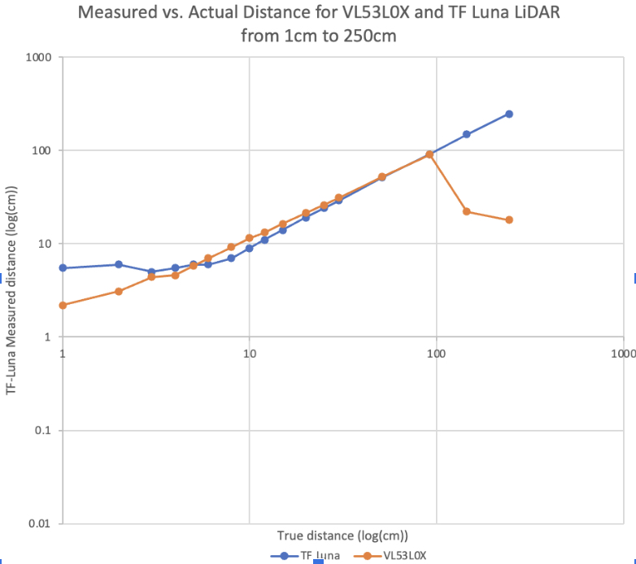
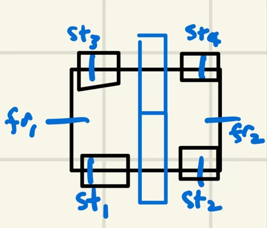
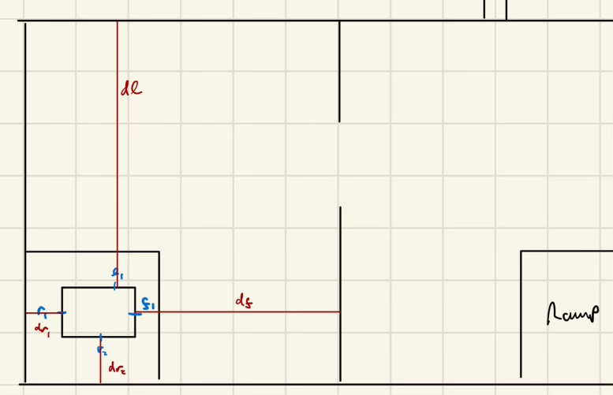

High-Level and Design Considerations
Our primary consideration in choosing sensors was to select a sensor set which would allow us to navigate the board using as few inputs as possible. This meant that, ideally, our sensor set would use a single method - such as rangefinding - everywhere on the board for positioning and navigation.
Sensor Choice
Our sensing objective was to approximate the position of the robot based on a minimal set of distance measurements, taken at a relatively low sampling rate (whose lower bound would be determined from the precise speed measurements afforded by our stepper motors). We determined quickly that IR rangefinders and short/medium distance LiDAR rangefinders would allow us sufficiently accurate distance measuring, while also requiring minimal compute.
Anticipating significant vibrations from the rough-surface mecanum wheels, we removed the relatively noisy IR sensors from consideration. Our final sensor decision was determined by the relative performance of our two LiDAR sensors, the VL53L0X and TF-Luna, shown above. As our maximal required distance measurement on the board was above the VL53L0X’s measurement threshold, causing significant error at larger distances, we opted to use TF-Luna LiDAR sensors on the robot, with corrections for low-distance error incorporated into sensor-chassis integration and code.
Sensor Configuration
With accurate distance measurements as our only mode of positioning and control, our robot required a sensor configuration capable of resolving both 1. Coordinate point position on the board, and 2. Robot orientation on the board. Coordinate point position resolution was simple, as the TF-Luna LiDAR sensors were accurate at almost all distances on the board to approximately 3cm.
Orientation was slightly more complex. Initially, we determined that our minimal sensing configuration would require six sensors, such that orientation on the board could be resolved by comparing readings from forward and rear sensors on either the port or the starboard side of the robot. This way, when the port or starboard readings were equivalent at front and rear, the robot would determine that it is oriented wall-normal, which we could use for navigation.
However, we later determined that we could resolve robot orientation more accurately through the more rudimentary method of coordinate estimation on a known map followed by wall collision. This required just four sensors, as, assuming that each sensor was accurate to a minute tolerance with appropriate calibration and low-range handling, our minimal coordinate system required four distance measurements: front, rear, left, and right. Ultimately, each sensor was placed at the center of each side of the robot, and inset by approximately 5cm to mitigate TF-Luna inaccuracy at short distances.
